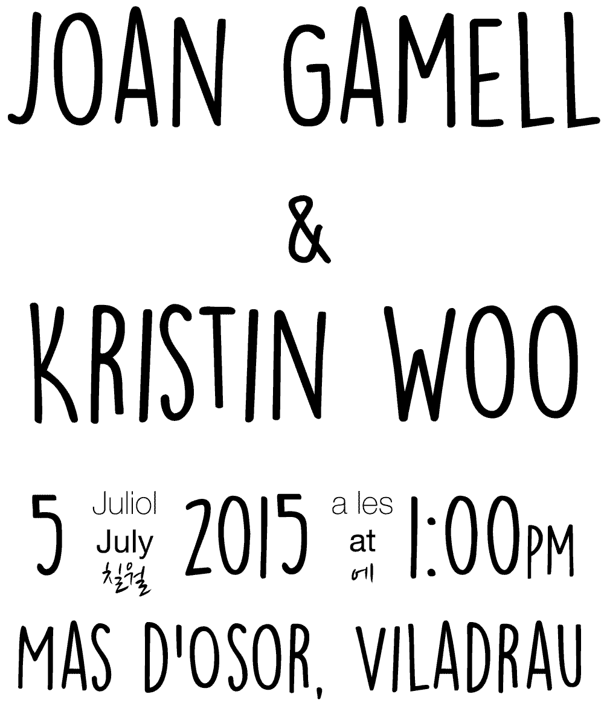

Looks better on Desktop |
Millora l'experiència veient la web en un navegador d'escritori
Home
RSVP
info & location

Please fill in the RSVP form
Siusplau ompliu el formulari d'assistència
Dresscode |
Etiqueta
:
Cocktail attire
Date & Time |
Data i hora
:
5th July 2015 1:00PM | 5 Juliol 2015 1:00PM
Location* |
Lloc
:
Mas d'Osor, Viladrau, Spain (41.863124, 2.353424)
*Transport will be provided from/to Barcelona to/from the Wedding venue. Please fill
RSVP form